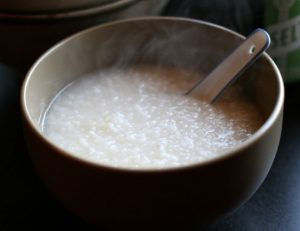

Gruel

Description
Gruel is a food consisting of some type of cereal—such as ground oats, wheat, rye or rice—heated or boiled in water or milk. It is a thinner version of porridge that may be more often drunk rather than eaten and may not need to be cooked.
Ingredients
- 1 1/2 Cups White Rice
- Water
Optional
- Vegetable or Chicken Stock
- Scallions
- Grated Ginger
- Salt or Soy Sauce (NOT BOTH)
- White Pepper (Black pepper works fine)
- Chili Oil
- Vegetables
Directions
- Bring water to a boil in a large pot
- Add rice to pot and boil for 5 minutes
- Bring to a low simmer
- Remember you have to go on vacation for 3 days and panic pack
- Forget rice on stove and leave for vacation
- Return home and find pot still simmering (requires a LOT of water)
- Test for medium thick slop texture
- Once texture has been achieved, season to taste and serve hot